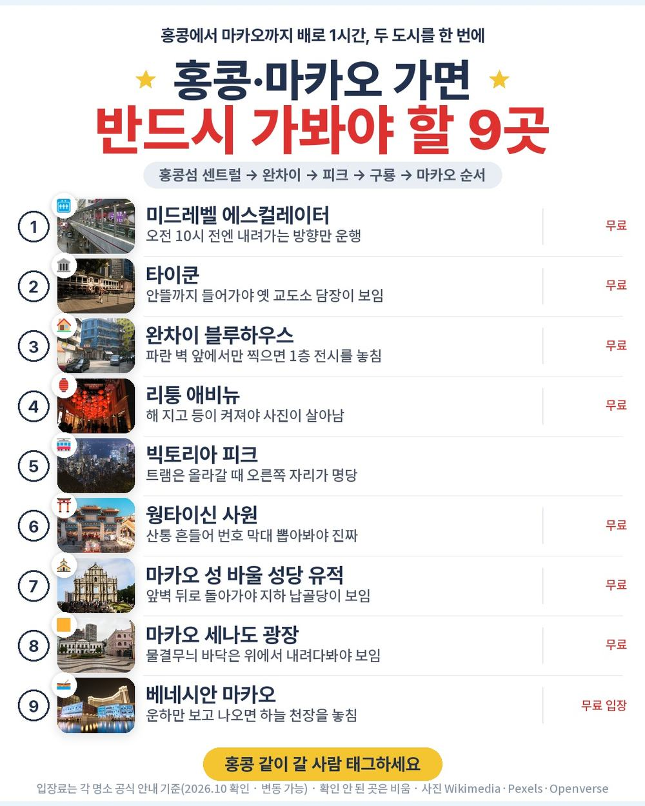
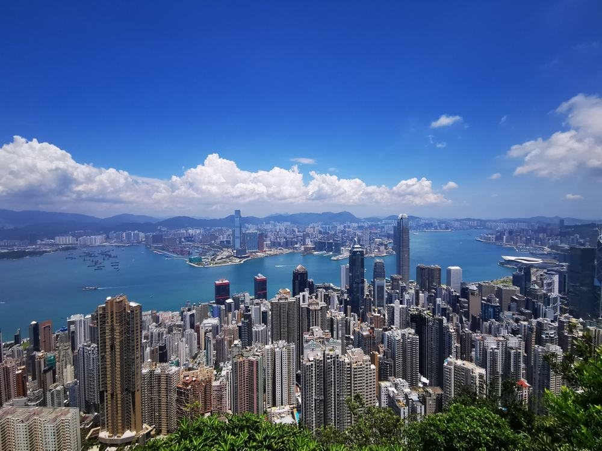
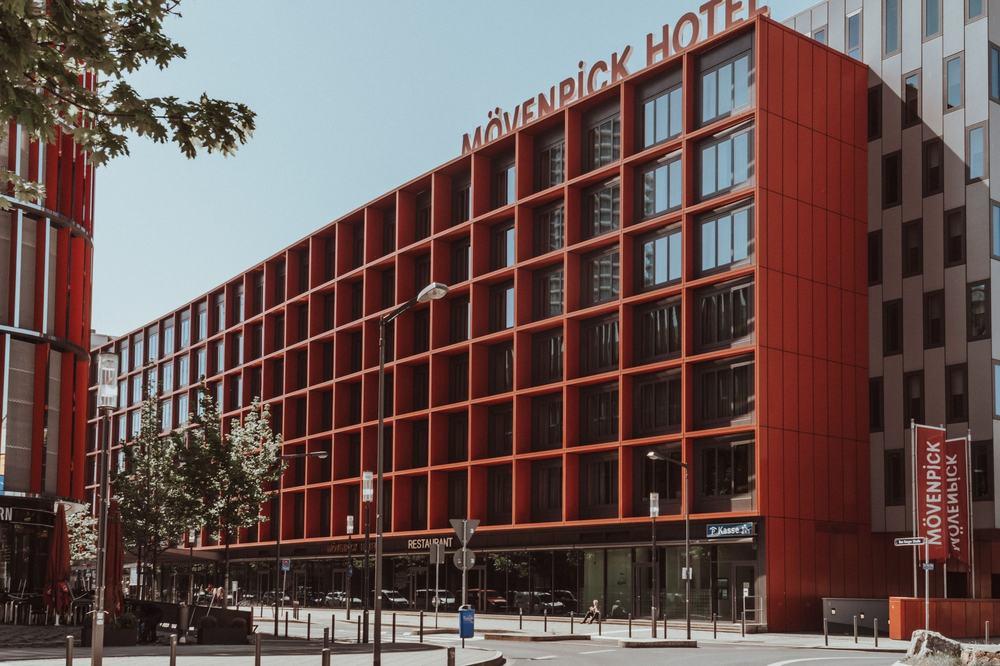
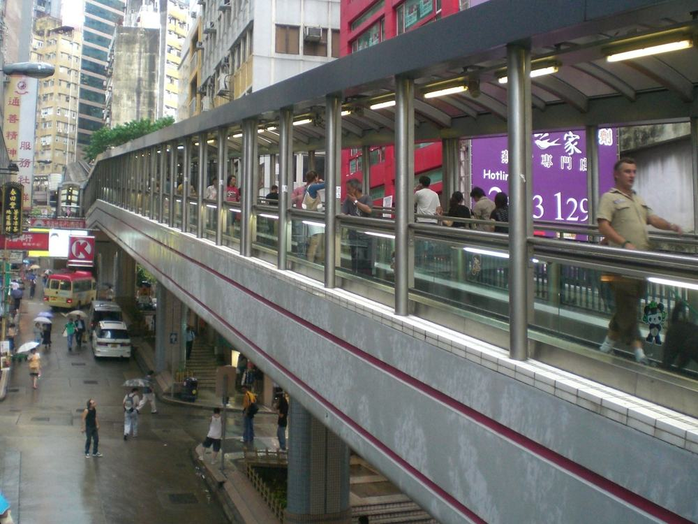
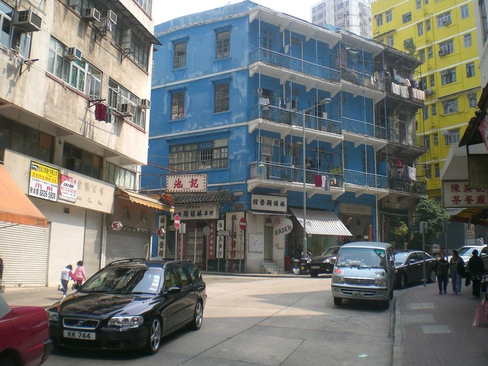
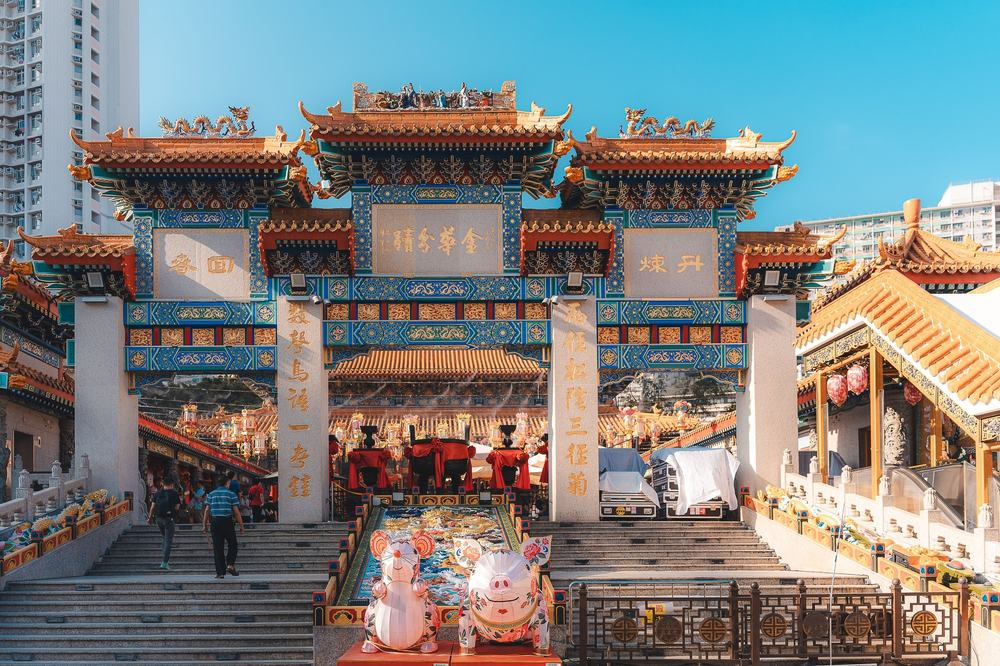
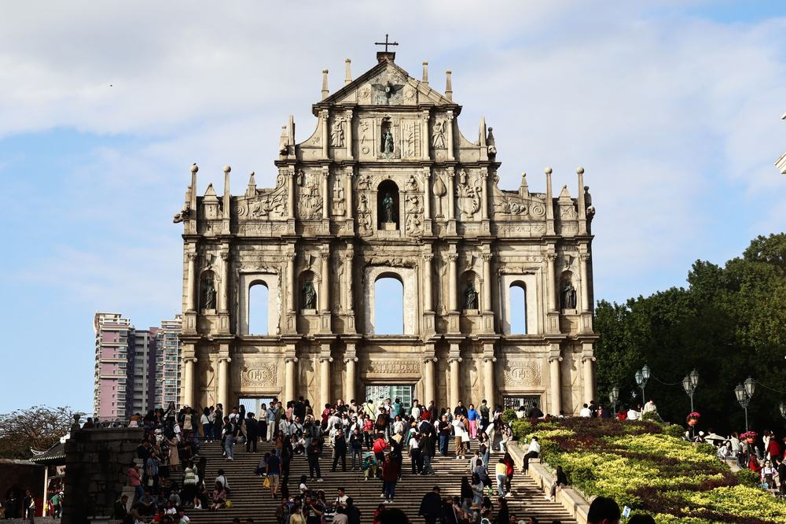
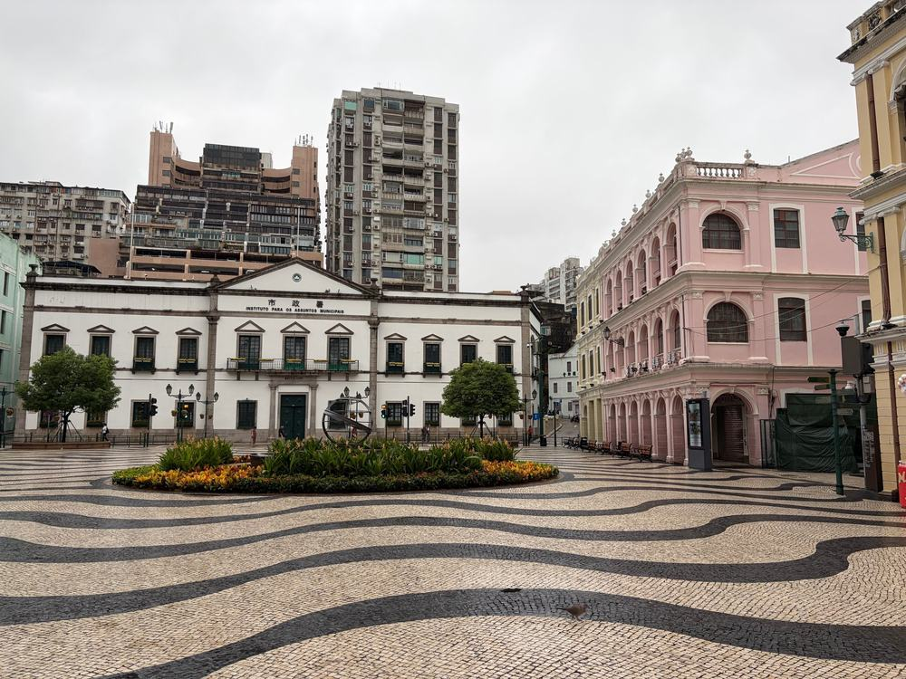

하나투어 홍콩 마카오 패키지 여행 79만 9,900원, 피크트램에 베네시안까지 현지에서 더 내는 돈은 얼마일까?

부산에서 짧게 다녀올 해외를 찾다 보면 홍콩이 꼭 걸림. 비행기로 세 시간 남짓이고, 배로 한 시간이면 마카오까지 붙일 수 있어서임.
그러다 하나투어 상품이 걸림. 김해 직항에 홍콩·마카오 두 도시, 4성 호텔 3박이 79만 9,900원임. 피크트램, 미드레벨 에스컬레이터, 웡타이신, 마카오 성 바울 유적과 베네시안까지 일정표에 다 들어 있음.
결론 — 추천. 부산에서 홍콩·마카오를 3박 5일에 한 번에 돌고, 따로 내는 건 가이드 경비 50달러가 핵심임. 다만 왕복 밤 비행기가 힘든 분, 쇼핑 2회가 싫은 분, 호텔이 시내 한복판이어야 하는 분은 아님.
79만 9,900원이 그만한 값인지, 현지에서 더 내는 돈은 얼마인지 원문을 뜯어봤음.
| 항목 | 내용 |
|---|---|
| 가격 | 1인 799,900원 (2인 1실 기준 · 11월 출발) |
| 여행사 | 하나투어 |
| 항공 | 트리니티항공 직항 · 김해 밤 출발 → 홍콩 자정 넘어 도착 / 귀국은 새벽 출발 → 김해 아침 도착 |
| 숙소 | 4성급 하버 플라자 리조트 시티(또는 동급) 3박 · 한 호텔에서 세 밤 |
| 일정 | 3박 5일 · 전용 버스 · 한국어 가이드 · 식사 8회 · 3일차 오후 자유시간 |
| 가는 곳 | 센트럴(미드레벨·타이쿤·소호) · 완차이(블루하우스·리퉁 애비뉴) · 빅토리아 피크 · 웡타이신 · 마카오 세나도 광장·성 바울 유적 · 베네시안 |
▶ 내 출발일 오늘 기준 요금 확인 (제휴 링크 · 예약 시 수수료를 받으며 가격은 같습니다)
| 순서 | 다루는 것 | 한 줄 결론 |
|---|---|---|
| 1 | 구성 뜯어보기 | 현지에서 따로 내는 건 가이드 경비 50달러 + 3일차 저녁 |
| 2 | 일정 살펴보기 | 2일차 홍콩섬 도보투어, 4일차 마카오가 가장 꽉 참 |
| 3 | 자유여행 VS 패키지 | 직접 짜면 98만원 | 패키지가 가이드 경비 더해도 11만원쯤 덜 듦 |
1. 구성 뜯어보기
요약 — 항공·4성 3박·식사 8회·입장료·전용 버스·한국어 가이드·보험이 들어 있음. 현지에서 더 내는 건 가이드 경비 1인 50달러와 3일차 저녁이고, 쇼핑은 2회.
1-1. 79만 9,900원에 들어 있는 것

포함 항목을 원문에서 그대로 옮기면 이럼.
- 왕복 항공권 + 공항세
- 4성급 호텔 3박 (2인 1실)
- 식사 8회 (호텔 조식 3 · 한식 2 · 얌차 1 · 매캐니즈 1 · 자유식 1)
- 관광지 입장료 · 피크트램 편도
- 전용 버스 · 한국어 가이드 · 여행자보험
관광은 이럼.
- 홍콩섬 센트럴 — 미드레벨 에스컬레이터 · 타이쿤 · 헐리우드 로드 · 소호
- 완차이 — 블루하우스 · 옛 완차이 우체국 · 리퉁 애비뉴
- 빅토리아 피크(피크트램) · 웡타이신 사원
- 마카오 — 세나도 광장 · 성 바울 성당 유적 · 육포거리 · 베네시안 리조트
이 상품의 차별점은 홍콩만이 아니라 마카오까지 한 번에 돈다는 것임. 따로 가면 왕복 배표와 마카오 시내 이동을 직접 챙겨야 함.
출발일별 요금 확인하기
https://naver.me/GdTuTh2c
1-2. 식사 여덟 번, 얌차와 매캐니즈

식사 8회 중 볼 만한 건 둘임. 3일차 점심 얌차(대나무 찜기 딤섬), 4일차 마카오 저녁 매캐니즈(포르투갈과 광둥 요리가 섞인 마카오식). 여기에 에그타르트가 1인 1개 간식으로 나옴.
2일차 저녁은 1인 100홍콩달러를 받는 자유식임. 인원·현지 사정에 따라 단체식으로 바뀌기도 함. 3일차 저녁만 각자 부담임.
1-3. 호텔과 쇼핑

호텔은 하버 플라자 리조트 시티, 4성급임. 예약 상황에 따라 동급으로 바뀔 수 있음. 위치는 시내 중심이 아니라 신계 틴수이와이라, 일정 중엔 전용 버스로 오감. 대신 세 밤을 한 호텔에서 자서 짐은 한 번만 풀면 됨.
홍콩 호텔은 일회용 세면도구와 플라스틱 생수를 주지 않음. 칫솔·치약·샴푸는 챙겨 가야 함.
쇼핑은 2회 — 녹용·차, 보석. 각 40분이고 사는 건 자유, 환불 규정도 있음.
1-4. 현장에서 더 낼 돈
| 항목 | 금액 | 비고 |
|---|---|---|
| 가이드·기사 경비 | 약 140,000원 | 1인 50달러 × 2 (현지 지불) |
| 3일차 저녁 | 약 60,000원 | 일정표상 불포함, 2인 추정 |
| 선택관광 | 0원 | 안 하면 그 시간은 자유시간 |
| 매너팁 | 자율 | 원문에 "지불 여부에 따른 불이익 없음" |
| 합계 (2인) | 약 200,000원 | 상품가 159만 9,800원 + 20만원 = 약 180만원 |
한 사람으로 치면 약 90만원임. 환율은 1달러 약 1,400원으로 잡았음.
1절 자주 나오는 질문
Q. 가이드 경비는 따로 내나요?
A. 냄. 1인 50달러를 현지에서 지불함. 상품가 밖임.
Q. 선택관광을 꼭 해야 하나요?
A. 아님. 3일차 '홍콩 문화 예술 투어'(40달러) 같은 선택관광은 안 하면 그 시간이 자유시간으로 진행됨.
Q. 호텔은 시내에 있나요?
A. 아님. 하버 플라자 리조트 시티는 신계 틴수이와이에 있음. 일정 중엔 전용 버스로 움직임.
2. 일정 살펴보기
요약 — 1일차 밤 비행기, 2일차 센트럴·완차이 도보투어와 빅토리아 피크, 3일차 웡타이신·쇼핑·얌차 뒤 오후 자유시간, 4일차 마카오 세계유산과 베네시안 뒤 새벽 비행기, 5일차 아침 김해 도착.
2-1. 하루하루 어디를 가나

| 일차 | 가는 곳 | 식사 | 숙소 |
|---|---|---|---|
| DAY 1 | 김해 21:50 출발 → 홍콩 00:40 도착 → 호텔 | — | 홍콩 |
| DAY 2 | 휴식 → 한식 점심 → 센트럴 도보(소호·헐리우드 로드·타이쿤·미드레벨) → 완차이(블루하우스·옛 우체국·리퉁 애비뉴) → 자유식 저녁 → 빅토리아 피크(피크트램 편도) | 조 호텔식 · 중 한식 · 석 자유식(HKD 100 제공) | 홍콩 |
| DAY 3 | 웡타이신 사원 → 쇼핑 2곳 → 얌차 점심 → 오후 자유시간 | 조 호텔식 · 중 얌차 · 석 불포함 | 홍콩 |
| DAY 4 | 한식 점심 → 마카오 이동(페리·버스 1시간) → 세나도 광장·성 바울 유적·육포거리 → 매캐니즈 저녁 → 베네시안 → 홍콩 → 공항 | 조 호텔식 · 중 한식 · 석 매캐니즈 | 기내 |
| DAY 5 | 홍콩 02:00 출발 → 김해 06:20 도착 | — | — |
| 일차 | 버스 이동 | 걷기 | 포함 식사 |
|---|---|---|---|
| DAY 1 | 약 0.8시간 | 적음 | 포함 끼니 없음 |
| DAY 2 | 약 2시간 | 중상 | 조 호텔식 · 중 한식 · 석 자유식 |
| DAY 3 | 약 1.5시간 | 적음 | 조 호텔식 · 중 얌차 |
| DAY 4 | 약 3시간 | 보통 | 조 호텔식 · 중 한식 · 석 현지식 |
| DAY 5 | 거의 없음 | 적음 | 포함 끼니 없음 |
| 합계 | 약 7.3시간 | - | 8끼 (호텔식 3 · 현지식 3 · 한식 2) |
요약 — 버스 이동은 5일 동안 약 7.3시간, 포함 식사는 8끼(호텔식 3 · 현지식 3 · 한식 2)임. 가장 많이 걷는 날은 DAY 2임.
2-2. 2일차 — 홍콩섬을 걸어서, 밤엔 피크로

새벽에 도착하니 오전은 쉬고 점심 한식 뒤 가이드를 만남. 센트럴은 걸어서 도는 날임. 영화 중경삼림에 나온 미드레벨 에스컬레이터, 옛 경찰서·교도소를 바꾼 타이쿤, 골동품 거리 헐리우드 로드, 카페 골목 소호. 소호에선 덩라우 벽화가 포토존임.
오후엔 완차이 — 블루하우스, 1913년 지은 옛 완차이 우체국, 붉은 등이 걸린 리퉁 애비뉴. 저녁 뒤엔 피크트램(1888년 개통, 45도 경사)으로 빅토리아 피크에 오름. 트램은 편도 1회이고 나머지 길은 전용 버스임.
피크트램은 올라갈 때 오른쪽, 내려올 때 왼쪽 자리에 앉아야 창밖이 잘 보임.
2-3. 3일차 — 소원 빌고 딤섬, 오후는 내 마음대로

아침엔 웡타이신 사원. 대나무 통을 흔들어 번호 막대를 떨어뜨리는 산통점을 볼 수 있음. 쇼핑 2곳 뒤 얌차 점심을 먹고, 오후는 자유시간임. 가이드는 함께 다니지 않고 저녁도 각자임.
2-4. 4일차 — 마카오 하루, 그리고 새벽 비행기

점심 뒤 페리나 버스로 1시간 걸려 마카오로 건너감(이 구간은 가이드 미동행, 마카오에서 새 가이드를 만남). 포르투갈 돌로 물결무늬를 깐 세나도 광장, 앞벽만 남은 성 바울 성당 유적, 시식이 자유로운 육포거리. 저녁은 매캐니즈, 그다음 실내에 운하를 판 베네시안 리조트.
다시 홍콩으로 건너와 공항으로 가고, 02:00 비행기로 김해 06:20 도착임. 이날은 호텔이 없음.
홍콩은 전자담배를 갖고 들어가는 것만으로 처벌 대상임. 기기·액상·일회용 전부 해당돼서 짐 쌀 때 미리 빼야 함.
2절 자주 나오는 질문
Q. 많이 걷나요?
A. 2일차 센트럴·완차이 도보투어가 가장 김. 대신 미드레벨은 에스컬레이터이고, 피크는 트램과 전용 버스로 오름.
Q. 비행기는 몇 시인가요?
A. 트리니티항공 직항이고, 김해 21:50 출발 → 홍콩 00:40 도착, 귀국은 홍콩 02:00 출발 → 김해 06:20 도착임(원문 기준). 기내식은 유료임.
Q. 마카오 들어갈 때 비자가 필요한가요?
A. 일반 여권이면 필요 없음. 다만 원문에 단수여권은 마카오 입국 시 비자 발급이 필요하다고 적혀 있음.
3. 자유여행 VS 패키지 | 직접 짜면 98만원
요약 — 같은 일정을 직접 짜면 1인 98만원쯤 듦. 패키지는 가이드 경비를 더해도 약 87만원이라 11만원쯤 덜 들고, 마카오 왕복과 자정 넘은 공항 이동까지 맡기는 셈임.
3-1. 같은 일정을 직접 짜면

같은 일정을 혼자 짠다고 치고 항목별로 계산해 봄. 11월 출발, 2인 1실 1인분임. 항공 말고는 추정치라 근거 열에 적어 둠.
| 항목 | 금액 | 근거 |
|---|---|---|
| 김해–홍콩 왕복 항공 | 463,000원 | 패키지와 같은 11월 출발 직항 (2026-10-07 마이리얼트립 조회) |
| 4성급 호텔 3박 | 240,000원 | 2인 1실 1박 약 16만원의 1인분 × 3 (추정) |
| 식사 8회 | 120,000원 | 조식 3·점심 3·저녁 2 (추정) |
| 공항↔호텔 왕복 | 50,000원 | 자정 넘어 도착·새벽 출발이라 택시, 2인 나눔 (추정) |
| 피크트램 | 20,000원 | 편도 + 전망대 이동 (추정) |
| 홍콩–마카오 왕복 배 | 65,000원 | 고속 페리 왕복 (추정) |
| 마카오 시내 이동 | 10,000원 | 버스·택시 (추정) |
| 여행자보험 | 15,000원 | 5일 기준 |
| 가이드 | — | 자유여행은 없음 |
| 합계 | 약 983,000원 |
직접 짜실 분은 이 날짜 항공권부터 보세요 — https://myrealt.rip/uOhHd2 (마이리얼트립 제휴 링크)
패키지는 799,900원에 가이드 경비 50달러(약 7만원)를 더해 약 87만원임.
3-2. 그래서 뭐가 다른가
같은 날 항공권 하나가 이미 46만원을 넘어서, 나머지를 다 더하면 패키지 쪽으로 기움. 게다가 이 일정은 이동이 까다로움.
- 밤 0시 40분 도착, 새벽 2시 출발이라 공항 이동을 직접 잡아야 함
- 홍콩 → 마카오 → 홍콩 배표와 마카오 입국을 직접 챙겨야 함
- 센트럴·완차이·피크·웡타이신을 대중교통으로 이어야 함
패키지는 이 전부가 전용 버스와 한국어 가이드로 붙음. 자유여행 계산표에 가이드 행이 비어 있는 게 그 뜻임 — 0원이 아니라 살 수 없는 것임.
3-3. 어느 쪽이 맞나
| 자유여행이 맞음 | 패키지가 맞음 |
|---|---|
| 침사추이·센트럴 시내에서 묵고 싶음 | 홍콩·마카오를 한 번에 볼 것임 |
| 지하철·페리 예약이 편함 | 이동·예약을 맡기고 싶음 |
| 비행기 시간을 낮으로 고르고 싶음 | 밤 비행기도 괜찮음 |
| 쇼핑 일정이 싫음 | 쇼핑 2회는 괜찮음 |
3절 자주 나오는 질문
Q. 자유여행이 더 싸지 않나요?
A. 계산해 보면 자유여행이 약 98만원, 패키지가 가이드 경비를 더해 약 87만원임. 같은 날 항공권만 46만원이 넘고, 마카오 왕복 배와 공항 택시를 따로 내면 이번엔 패키지가 덜 듦.
Q. 몇 명이면 출발하나요?
A. 원문 최소 인원은 2명임. 다른 상품의 하나투어 손님이 합류하는 단체 상품임.
Q. 시차가 있나요?
A. 홍콩·마카오는 한국보다 1시간 늦음. 현지 12시가 한국 1시임.
마무리
정리하면 이럼.
추천함. 79만 9,900원에 김해 직항, 4성급 호텔 3박, 식사 8회, 피크트램과 빅토리아 피크, 미드레벨 에스컬레이터, 웡타이신, 마카오 성 바울 유적과 세나도 광장, 베네시안이 들어 있음. 현지에서 따로 내는 건 가이드 경비 50달러와 3일차 저녁 정도임.
이런 분은 고르면 안 됨. 왕복 밤 비행기가 힘든 분, 쇼핑 2회가 싫은 분, 호텔이 시내 한복판이어야 하는 분.
걸리는 점이 있긴 한데 상품 흠이라기보다 맞는 사람과 안 맞는 사람을 가르는 조건에 가까움.
오늘 기준 출발일별 요금 보기
https://naver.me/GdTuTh2c
같은 목적지 다른 여행사 패키지, 쇼핑·선택관광·가이드 경비까지 비교
https://pkg-lab.com/search/?q=%ED%99%8D%EC%BD%A9&utm_source=blog&utm_medium=post&utm_campaign=daily
함께 보면 좋은 글
노랑풍선 다낭 패키지 여행 62만 9천원, 바나힐에 호이안 야경까지 추가금 진짜 없을까?
https://blog.naver.com/robotnady10/224432532351
참좋은여행 나트랑 달랏 패키지 여행 52만 9천원, 추가금 진짜 없을까?
https://blog.naver.com/robotnady10/224431609302
이 글에는 네이버·마이리얼트립 제휴 링크가 포함되어 있으며, 링크를 통해 예약하시면 일정 수수료를 받습니다. 가격은 동일합니다. 가격과 구성은 2026년 10월 7일 확인 기준이며 출발일에 따라 달라질 수 있습니다.
▶ 이 상품, 영상으로 보기 (유튜브)
▶ 홍콩 패키지 오늘 값 나란히 비교
▶ 같은 목적지 다른 여행사 패키지, 쇼핑·선택관광·가이드 경비까지 비교: pkg-lab.com
사진 출처 (저작자 · 라이선스):
HK Central Cochrane Street Central-Mid-Levels escalators 1 — CC BY-SA 3.0 (Wikimedia Commons) 원본

Bluehse — BY-SA 3.0 (Openverse) 원본
그 밖의 사진: Pexels
쇼츠·클립 영상과 사진:
Hong Kong City Night View from Victoria Peak — Baudhayan Lahiri (YouTube, CC BY) 원본
Hong Kong's Central Mid-Levels Escalator System — Escape from Custody (YouTube, CC BY) 원본
在Omicron疫情下善信進入黃大仙祠祈求健康平安,Omicron epidemic, Worshi — A walk around Hong Kong_漫遊香港 (YouTube, CC BY) 원본
Senado Square Macau Walking Tour | takeastep #vide — Takeastep (YouTube, CC BY) 원본
The Venetian Macao-Resort-Hotel (8300656204) — CC BY-SA 2.0 (Wikimedia Commons) 원본
.jpg){kind=link}